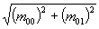

Module org.apache.sis.referencing
Class AffineTransforms2D
Bridge between
Matrix and Java2D AffineTransform instances.
Those AffineTransform instances can be viewed as 3×3 matrices.
Contains also utility methods operating on AffineTransform instances.- Since:
- 0.4
-
Method Summary
Modifier and TypeMethodDescriptionstatic AffineTransformcastOrCopy(MathTransform transform) Returns the given transform as a Java2D affine transform.static AffineTransformcastOrCopy(Matrix matrix) Returns the given matrix as a Java2D affine transform.static intgetFlip(AffineTransform transform) Returns-1if one axis has been flipped,+1if no axis has been flipped, or 0 if unknown.static doublegetRotation(AffineTransform transform) Returns an estimation of the rotation angle in radians.static doubleReturns a global scale factor for the specified affine transform.static doublegetScaleX0(AffineTransform transform) Returns the magnitude of scale factor x by canceling the effect of eventual flip and rotation.static doublegetScaleY0(AffineTransform transform) Returns the magnitude of scale factor y by canceling the effect of eventual flip and rotation.static intgetSwapXY(AffineTransform transform) Returns an estimation about whether the specified transform swaps x and y axes.static Point2DinverseDeltaTransform(AffineTransform transform, Point2D vector, Point2D dest) Calculates the inverse transform of a point without applying the translation components.static Rectangle2DinverseTransform(AffineTransform transform, Rectangle2D bounds, Rectangle2D dest) Calculates a rectangle which entirely contains the inverse transform ofbounds.static LinearTransformtoMathTransform(AffineTransform transform) Creates a math transform from the given affine transform.static Matrix3toMatrix(AffineTransform transform) Creates a 3×3 matrix from the given affine transform.static Rectangle2Dtransform(AffineTransform transform, Rectangle2D bounds, Rectangle2D dest) Calculates a rectangle which entirely contains the direct transform ofbounds.static Shapetransform(AffineTransform transform, Shape shape, boolean allowOverwrite) Transforms the given shape.
-
Method Details
-
castOrCopy
Returns the given transform as a Java2D affine transform.- Parameters:
transform- the transform to convert, ornull.- Returns:
- the transform argument if it can be safely casted (including
nullargument) or converted. - Throws:
IllegalArgumentException- if the given transform cannot be casted or converted.- See Also:
-
castOrCopy
Returns the given matrix as a Java2D affine transform. If the given matrix is already an instance ofAffineTransform, then it is returned directly. Otherwise the values are copied in a newAffineTransforminstance.- Parameters:
matrix- the matrix to return as an affine transform, ornull.- Returns:
- the matrix argument if it can be safely casted (including
nullargument), or a copy of the given matrix otherwise. - Throws:
IllegalArgumentException- if the given matrix size is not 3×3 or if the matrix is not affine.- See Also:
-
toMatrix
Creates a 3×3 matrix from the given affine transform.- Parameters:
transform- the affine transform to copy as a matrix.- Returns:
- a matrix containing the same terms than the given affine transform.
-
toMathTransform
Creates a math transform from the given affine transform. This method is the converse ofcastOrCopy(MathTransform).- Parameters:
transform- the affine transform to cast or copy as aMathTransform, ornull.- Returns:
- a
MathTransformdoing the same operation than the givenAffineTransform, ornullif the given transform was null. - Since:
- 1.1
- See Also:
-
transform
Transforms the given shape. This method is similar toAffineTransform.createTransformedShape(Shape)except that:- It tries to preserve the shape kind when possible. For example if the given shape
is an instance of
RectangularShapeand the given transform does not involve rotation, then the returned shape may be some instance of the same class. - It tries to recycle the given object if
overwriteistrue.
- Parameters:
transform- the affine transform to use.shape- the shape to transform, ornull.allowOverwrite- iftrue, this method is allowed to overwriteshapewith the transform result. Iffalse, thenshapeis never modified.- Returns:
- the transform of the given shape, or
nullif the given shape was null. May or may not be the same instance than the given shape. - See Also:
- It tries to preserve the shape kind when possible. For example if the given shape
is an instance of
-
transform
public static Rectangle2D transform(AffineTransform transform, Rectangle2D bounds, Rectangle2D dest) Calculates a rectangle which entirely contains the direct transform ofbounds. This operation is equivalent to the following code, except that it can reuse the givendestrectangle and is potentially more efficient:Note that if the given rectangle is an image bounds, then the given transform shall map the upper-left corner of pixels (as in Java2D usage), not the center of pixels (OGC usage).return transform.createTransformedShape(bounds).getBounds2D();- Parameters:
transform- the affine transform to use.bounds- the rectangle to transform, ornull. this rectangle will not be modified except ifdestreferences the same object.dest- rectangle in which to place the result. Ifnull, a new rectangle will be created.- Returns:
- the direct transform of the
boundsrectangle, ornullifboundswas null. - See Also:
-
inverseTransform
public static Rectangle2D inverseTransform(AffineTransform transform, Rectangle2D bounds, Rectangle2D dest) throws NoninvertibleTransformException Calculates a rectangle which entirely contains the inverse transform ofbounds. This operation is equivalent to the following code, except that it can reuse the givendestrectangle and is potentially more efficient:return createInverse().createTransformedShape(bounds).getBounds2D();- Parameters:
transform- the affine transform to use.bounds- the rectangle to transform, ornull. this rectangle will not be modified except ifdestreferences the same object.dest- rectangle in which to place the result. Ifnull, a new rectangle will be created.- Returns:
- the inverse transform of the
boundsrectangle, ornullifboundswas null. - Throws:
NoninvertibleTransformException- if the affine transform cannot be inverted.
-
inverseDeltaTransform
public static Point2D inverseDeltaTransform(AffineTransform transform, Point2D vector, Point2D dest) throws NoninvertibleTransformException Calculates the inverse transform of a point without applying the translation components. In other words, calculates the inverse transform of a displacement vector.- Parameters:
transform- the affine transform to use.vector- the vector to transform stored as a point. this point will not be modified except ifdestreferences the same object.dest- point in which to place the result. Ifnull, a new point will be created.- Returns:
- the inverse transform of the
vector, ornullifsourcewas null. - Throws:
NoninvertibleTransformException- if the affine transform cannot be inverted.
-
getSwapXY
Returns an estimation about whether the specified transform swaps x and y axes. This method assumes that the specified affine transform is built from arbitrary translations, scales or rotations, but no shear. It returns+1if the (x, y) axis order seems to be preserved,-1if the transform seems to swap axis to the (y, x) axis order, or0if this method cannot make a decision.- Parameters:
transform- the affine transform to inspect.- Returns:
trueif the given transform seems to swap axis order.
-
getRotation
Returns an estimation of the rotation angle in radians. This method assumes that the specified affine transform is built from arbitrary translations, scales or rotations, but no shear. If a flip has been applied, then this method assumes that the flipped axis is the y one in source CRS space. For a grid to world CRS transform, this is the row number in grid coordinates.- Parameters:
transform- the affine transform to inspect.- Returns:
- an estimation of the rotation angle in radians,
or
NaNif the angle cannot be estimated.
-
getFlip
Returns-1if one axis has been flipped,+1if no axis has been flipped, or 0 if unknown. A flipped axis in an axis with direction reversed (typically the y axis). This method assumes that the specified affine transform is built from arbitrary translations, scales or rotations, but no shear. Note that it is not possible to determine which of the x or y axis has been flipped.This method can be used in order to set the sign of a scale according the flipping state. The example below choose to apply the sign on the y scale, but this is an arbitrary (while common) choice:
This method is similar to the following code, except that this method distinguishes between "unflipped" and "unknown" states.double scaleX0 = getScaleX0(transform); double scaleY0 = getScaleY0(transform); int flip = getFlip(transform); if (flip != 0) { scaleY0 *= flip; // ... continue the process here. }boolean flipped = (tr.getType() & TYPE_FLIP) != 0;- Parameters:
transform- the affine transform to inspect.- Returns:
- -1 if an axis has been flipped, +1 if no flipping, or 0 if unknown.
-
getScaleX0
Returns the magnitude of scale factor x by canceling the effect of eventual flip and rotation. This factor is calculated by:
- Parameters:
transform- the affine transform to inspect.- Returns:
- the magnitude of scale factor x.
-
getScaleY0
Returns the magnitude of scale factor y by canceling the effect of eventual flip and rotation. This factor is calculated by:
- Parameters:
transform- the affine transform to inspect.- Returns:
- the magnitude of scale factor y.
-
getScale
Returns a global scale factor for the specified affine transform. This scale factor combinesgetScaleX0(tr)andgetScaleY0(tr). The way to compute such a "global" scale is somewhat arbitrary and may change in any future version.- Parameters:
tr- the affine transform to inspect.- Returns:
- a "global" scale factor.
-